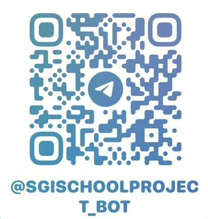

Bienvenido al Panel de Control
Aquí puedes gestionar reportes, incidentes, usuarios y configurar el sistema.
Resumen en Tiempo Real
Total Incidentes
15
Incidentes Pendientes
5
Gestión de Incidentes
Aquí se listan los reportes de incidentes. Usa los filtros para buscar por fecha, ubicación o estado.
| ID | Ubicación | Descripción | Hora | Estado | Acciones |
|---|---|---|---|---|---|
| 001 | Baño 1 | Fuga de agua | 08:15 | Pendiente |
Estadísticas
Visualiza la frecuencia de incidentes por ubicación y horario.
Gestión de Usuarios
Administra los usuarios, asigna roles y consulta el historial de actividad.
Para recibir notificiones personalizadas, interactua con nuestro bot de Telegram
Puede escanear el codigo QR que aparece debajo para hacerlo desde su movil o puede hacer click en el siguiente boton. Solo necesita decirle la palabra "Hola" a nuestro bot.
NOTA: Para ordenadores, primero debe tener su sesion de Telegram iniciada en su ordenador.